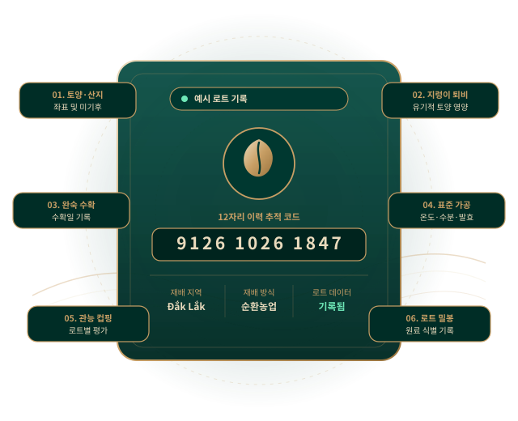
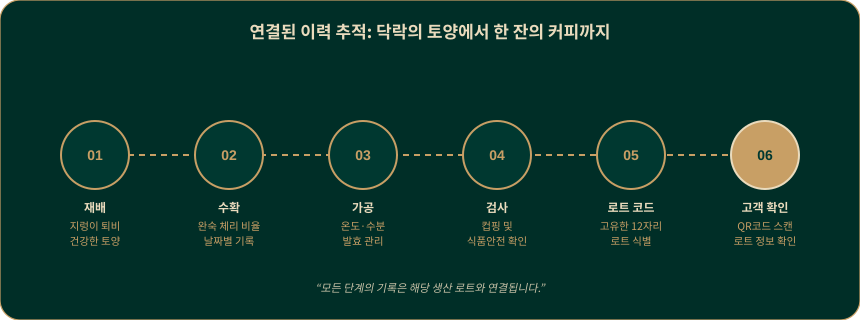

01
“순수 원료”와 결점을 감추는 혼합 원료의 모호한 경계
로트 기록이 없는 커피나 카카오에는 오래되거나 결함이 있는 원료가 혼합될 수 있습니다. 카카오는 색을 짙게 하고 불쾌한 산미를 숨기기 위해 알칼리화할 수도 있습니다. 검증 자료가 없다면 높은 가격을 지불하고도 기대한 자연의 맛을 얻지 못할 수 있습니다.
가능한 영향: 카카오의 폴리페놀·플라바놀 같은 천연 성분과 원산지 특유의 향미 손실.
모든 생산 단계를 추적할 수 있는 농산물을 선택할 때 얻는 실질적인 혜택을 자세히 안내합니다.
커피·카카오·농산물 시장에서는 누구나 포장에 “순수”, “스페셜티”, “농장 직송”이라고 적을 수 있습니다. 홍보 문구와 진정한 품질을 구분하는 기준은 하나입니다. 지금 손에 든 제품이 어떤 과정을 거쳐 생산되었는지 직접 역추적할 수 있습니까?

아래 로트 정보는 이력 추적 기록의 표시 방식을 보여주는 예시 자료이며, 실제 검증된 생산 기록이 아닙니다. 실제 제품의 이력 추적은 SI CAFE 공식 이력 추적 사이트에서 확인하거나, 아래에 제품의 실제 로트 번호 또는 추적 코드를 입력하세요.
원산지 정보가 포장 단계에서 끊기면 소비자는 건강, 맛, 예산을 확인할 수 없는 주장에 맡겨야 합니다.
로트 기록이 없는 커피나 카카오에는 오래되거나 결함이 있는 원료가 혼합될 수 있습니다. 카카오는 색을 짙게 하고 불쾌한 산미를 숨기기 위해 알칼리화할 수도 있습니다. 검증 자료가 없다면 높은 가격을 지불하고도 기대한 자연의 맛을 얻지 못할 수 있습니다.
수확량만 추구하는 재배는 화학비료와 농약 의존도를 높일 수 있습니다. 로스팅 후에는 외관이나 냄새만으로 사용 이력을 파악하기 어렵습니다. 재배일지와 토양관리 기록이 없으면 ‘깨끗한 농산물’이라는 표현은 검증되지 않은 구호에 머뭅니다.
일부 생산자는 시즌 초 소량의 샘플만 검사하고 그 결과를 일 년 내내 수집한 대량 제품의 홍보에 사용합니다. 로트별 추적 정보가 없으면 소비자는 손에 든 제품이 실제로 어느 생산분인지 알 수 없습니다.
로트 번호가 없다면 수분, 풍미 또는 보관 상태에 문제가 생겼을 때 수확·가공·창고 관리 중 어느 단계가 원인인지 파악하기 어렵습니다. 투명성은 생산자가 개별 로트에 대해 책임을 지는 데서 시작합니다.
이력 추적은 공장만을 위한 기술이 아닙니다. 소비자의 권익을 지키는 수단이자 일상의 음용 경험을 높이는 방법입니다.
입소문이나 포장의 화려한 설명에만 의존할 필요가 없습니다. 12자리 번호를 입력하거나 스캔하면 닥락의 재배지역, 수확일, 가공 방식 및 기록된 품질 지표를 살펴볼 수 있습니다.
Si Farm & Si Cafe는 원산지 투명성을 순환농업과 연결합니다. 지렁이 퇴비로 토양을 가꾸고 생물학적 관리 방법을 활용하며, 원료의 결함을 감추기 위한 합성 향료나 알칼리화 처리를 지양합니다.
파인 로부스타 로트가 95% 이상의 숙성 체리로 수확되고 온도 조절 발효와 고상 건조를 거쳤다는 사실을 알면 긴 단맛의 여운, 다크초콜릿, 구운 밤, 익은 과일 향이 어떻게 만들어지는지 더 깊이 이해할 수 있습니다.
홈브루어, 카페 운영자, F&B 파트너에게 원료 특성의 갑작스러운 변화는 큰 문제입니다. 로트 기록에 포함된 수분 함량, 로스팅 정도, 가공 방법 등을 참고하면 추출 조건을 조정하고 비슷한 품질을 재현하기 쉽습니다.
투명한 이력은 잘 익은 열매의 선별 수확, 순환형 토양 관리, 동결건조 및 천연 향 회수 같은 고도 가공, 품질검사 등 실제 가치가 어디에서 생기는지 보여줍니다.
투명한 제품을 선택하는 일은 닥락 농민들이 책임 있는 재배, 토양 회복 및 지렁이 퇴비 순환 시스템에 지속 투자하도록 응원하는 행동입니다. 기업 선물이나 고객 접대용으로도 로트 추적 정보는 세심함과 책임감을 전합니다.

Si Cafe & Si Farm의 12자리 코드(예: 9126 1026 1847)는 생산 관리 시스템의 로트 식별번호를 나타냅니다. 아래 숫자 묶음을 눌러 각각의 의미를 확인하세요.
아래 표는 두 접근 방식이 제공하는 정보와 소비자 혜택의 핵심 차이를 보여줍니다.
| 평가 항목 | 표현이 모호한 제품 | Si Cafe & Si Farm 추적 가능 제품 |
|---|---|---|
| 원산지 입증 근거 | 포장에 “중부 고원 특산물” 또는 “100% 순수” 같은 일반적인 문구만 표시합니다. | 각 로트에 고유한 12자리 코드를 부여하고 닥락 재배 기록과 연결합니다. |
| 재배 방식 및 토양 영양 | 농장 이력이 없어 화학비료와 농약 사용 현황을 확인하기 어렵습니다. | 토양 생태를 위한 Si Farm의 지렁이 퇴비 순환농업을 안내합니다. |
| 원료의 진정성 | 오래된 원료나 결함 원료를 혼합하고, 알칼리화나 향료로 색과 냄새를 균일하게 만들 수 있습니다. | 자연스러운 색과 향, 로트별 품질 정보를 기록하는 최소 가공 원료를 지향합니다. |
| 품질 평가 자료 | 몇 년 전의 검사 결과 하나를 모든 판매 로트의 근거로 사용합니다. | 로트별 물리적 특성, 수분 함량, 가공 과정, 관능 컵핑 점수를 기록합니다. |
| 장기적인 품질 일관성 | 구매할 때마다 품질이 달라져도 원인을 알기 어렵습니다. | 로트 특성을 토대로 추출법을 조절하고 일관된 결과를 얻도록 돕습니다. |
| 포장 이후 책임 소재 | 판매 후 기록이 끊겨 품질 변화의 원인을 역추적하기 어렵습니다. | 닥락 Quảng Phú의 가공 시설을 거쳐 소비자에게 도달하기까지 로트별 제품 이력을 추적합니다. |
현명한 소비자, 추출 전문가 및 기업 파트너가 자주 묻는 실제 질문입니다.
정품 인증 라벨은 주로 포장이 특정 브랜드의 것인지를 확인합니다. 반면 원료가 어디에서 재배됐고 언제 수확·가공됐는지까지 보여주지는 못합니다. 12자리 이력 추적 코드는 특정 로트의 재배지, 지렁이 퇴비 관리, 수확 기록, 가공 조건 및 향미 평가 정보를 연결하기 위한 것입니다.
이는 실제 농산물의 자연스러운 차이를 반영할 수 있습니다. 햇빛, 강수량, 숙성도, 미기후는 시간에 따라 달라집니다. 로트별 기록은 모든 제품에 동일한 설명을 반복하는 대신 이러한 차이를 보여줍니다.
많은 카카오 분말은 색을 짙게 하고 산미를 줄이기 위해 알칼리 처리(더치 프로세스)를 거칩니다. 이 과정에서 천연 플라바놀과 폴리페놀이 감소할 수 있습니다. 천연 카카오의 로트 정보는 발효, 로스팅 조건, 비알칼리화 여부 및 닥락 카카오의 향미를 확인하는 데 도움을 줍니다.
네. 휴대전화로 포장의 QR코드를 스캔하면 해당 로트의 ?lot=... 매개변수가 포함된 주소로 연결될 수 있습니다. 또는 라벨의 12자리 번호를 직접 입력해 포장을 열기 전에 제공된 정보를 확인할 수 있습니다.